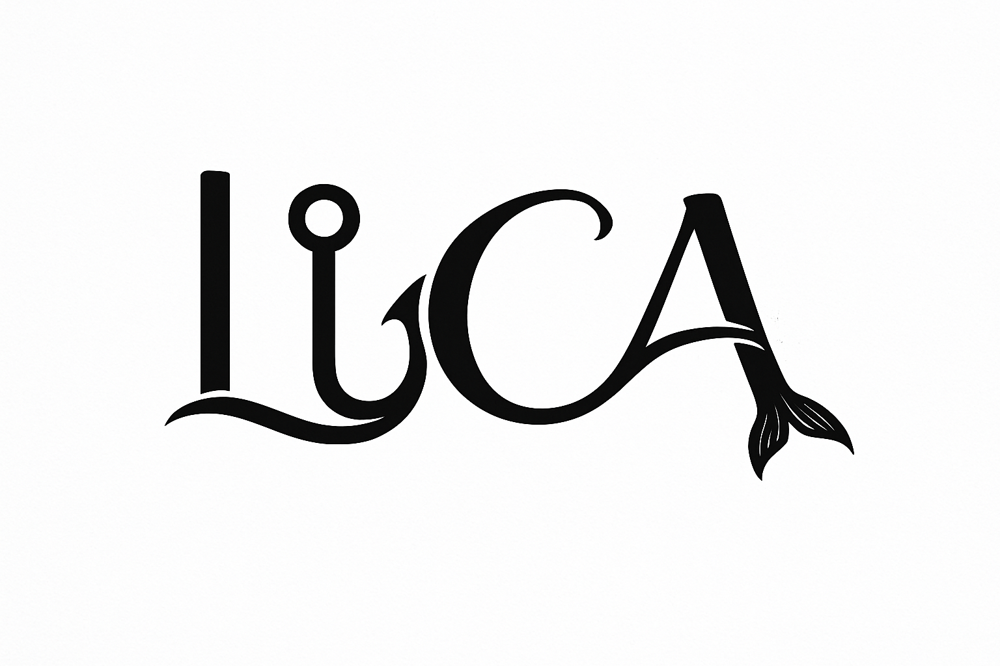

02 / Challenge
The question.
How can a brand system stay recognizable as it moves from identity to physical applications?
Case Study / 07
A visual identity system explored through graphics and apparel applications.
 LiCA / Selected visual
LiCA / Selected visual
01 / Context
LiCA is represented by a logo, brand sheet and apparel applications. These pieces show the identity adapting to different formats.
The collection focuses on the relationship between graphic identity and its expression across physical pieces.
02 / Challenge
How can a brand system stay recognizable as it moves from identity to physical applications?
03 / Objectives
04 / Process
The identity, supporting graphics and apparel mockups demonstrate the brand language as it moves across different surfaces.
05 / Solution
A logo system extended into brand and apparel applications.
06 / Visual explorations
Original project imagery, presented without changes to the source assets.


07 / Results
A logo system extended into brand and apparel applications.
Case study in progress. Add details about implementation and the project's real-world outcomes if available.